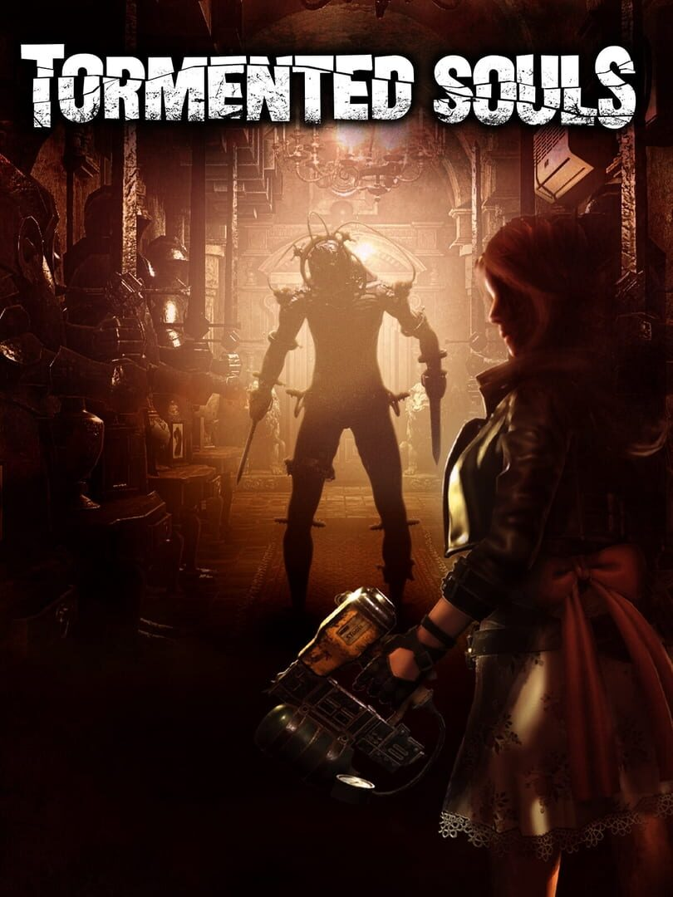

Tormented Souls
Tormented Souls
Details
|  | |
| Playtime | Not Played |
| Last Activity | Never |
| Added | 10/2/2025 17:01:56 |
| Modified | 11/17/2025 0:59:15 |
| Completion Status | Not Played |
| Library | Amazon Games |
| Source | Amazon |
| Platform | Amazon Games |
| Release Date | 8/27/2021 |
| Community Score | 83 |
| Critic Score | 82 |
| User Score | |
| Genre | Action Adventure |
| Developer | Abstract Digital works Dual Effect |
| Publisher | PQube |
| Feature | Single-Player |
| Links | Official Website Steam GOG Epic Twitch Nintendo Playstation Xbox Discord |
| Tag | [GGDeals] Synced |
Description

Something Evil Lurks at Winterlake
While investigating the disappearance of twin girls at Winterlake, something terrible happens to Caroline Walker. Waking in the dead of night, naked and hooked up to some kind of outdated medical equipment in a bathtub, Caroline must fight for her life as she explores the halls of the abandoned mansion.

A Nod to the Classics
Tormented Souls draws inspiration from classic survival horror like From Resident Evil, Silent Hill, and Alone in the Dark. A modern take on the fixed-perspective action-adventure game, Tormented Souls offers a modernised control scheme and dynamic camera combined with classic gameplay.

Deadly Combat
Dark forces and unspeakable horrors will do everything in their power to stop Caroline getting to the truth. Use anything and everything that you can find to fight back against evils lurking in the darkness.

Keep Your Wits About You
You'll need much more than a steady aim and sharp reflexes to make it out alive. Search the environment for anything you can use to your advantage. Combine items to solve twisted puzzles and use every resource available to explore the secrets of the mansion and its grounds.

Fiendish Puzzles
Scavenge essential resources and tools, decipher clues from long-forgotten journals, and combine it all to solve fiendish puzzles and get to the bottom of the mansion's sordid history.

Another Dimension
Nothing is quite as it seems at Winterlake. Mirrors provide a path to an alternate reality and another place in time. By crossing these shimmering gateways, Caroline can manipulate the very fabric of reality in surprising ways.

You Are Not Alone In the Dark
The mansion may seem abandoned, but as Caroline investigates its secrets, dark forces and unspeakable horrors will do everything in their power to stop her getting to the truth. Be sure to be alert at all times, and use anything you can find to fight off the encroaching terrors of Winterlake. Just remember: gaze into the darkness, and it also gazes into you...

Can Caroline Walker discover the truth and escape with her life?